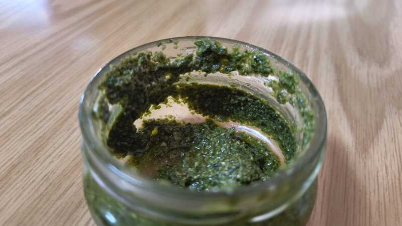

Pesto

Description
A homemade pesto from 4 simple ingredients
Ingredients
- A bundle of Basil
- Half a cup of Pine nuts
- 1/4 cup of olive oil
- A pinch of salt
Steps
-
Soak Basil with water and soap to get rid of bugs, dirt and pesticides
- Wash thoroughly
-
Optional: soak the pine nuts for a while to get the maximum nutritional value
-
Put all ingredients together in the blender and mix(/blend?)
-
Separate to jars and freeze what you are not using.
Lasts for a couple of days in the fridge, a couple of months in the freezer